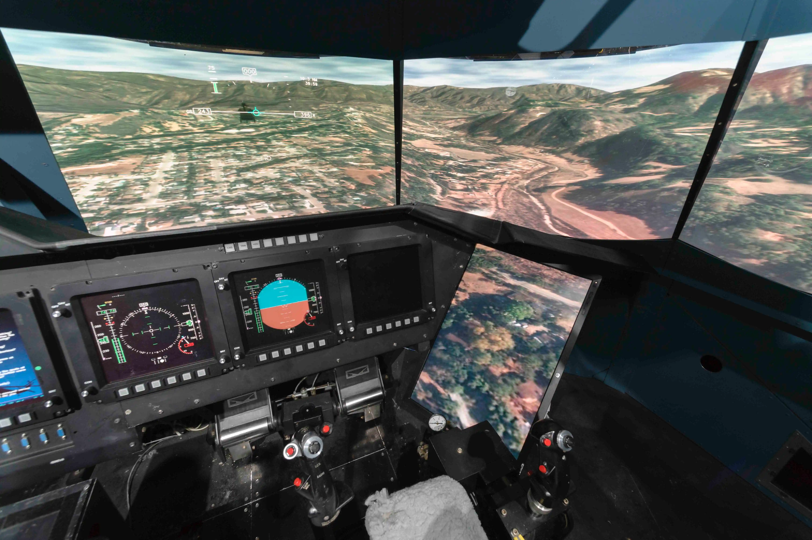
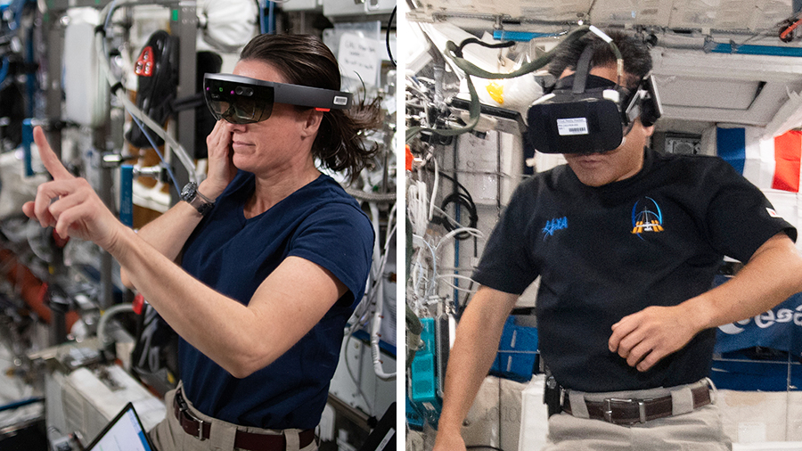

002 : Unveiling the Cosmic Frontier: Simulation, Deep Space Exploration, VR, and AI
GET READY TO EMBARK ON AN INTERSTELLAR JOURNEY! EXPLORE THE COSMIC SYNERGY THAT'S REDEFINING SPACE EXPLORATION, FROM CUTTING-EDGE SIMULATIONS TO IMMERSIVE VR EXPERIENCES AND AI-DRIVEN COSMIC INSIGHTS. STAY TUNED FOR A MIND-BENDING COSMIC ADVENTURE LIKE NO OTHER! 🌌🛰️ #SPACEEXPLORATION #VR #AI #SIMULATION
Introduction
The confluence of simulation technology, deep space exploration, virtual reality (VR), and artificial intelligence (AI) represents a cosmic synergy that is propelling humanity into the farthest reaches of the universe. In this blog post, we'll embark on a journey through the cosmos to explore how these four pillars are revolutionizing our understanding of space and redefining human exploration.
The Cosmic Challenge
Deep space is a realm of extremes, where vast distances, harsh conditions, and the unknown await. The challenges of exploring this frontier require innovative solutions, and simulation technology is at the forefront of our cosmic endeavors.
Simulation: Mapping the Uncharted
Simulation technology enables us to replicate cosmic environments and phenomena on Earth, from the microgravity of space to the tumultuous atmospheres of distant planets. It is a vital tool for mission planning, astronaut training, and understanding extraterrestrial environments.
Deep Space Exploration: Beyond Our Imagination
Our quest for knowledge takes us to the Moon, Mars, and beyond. Simulations help us prepare for these ambitious missions by mimicking conditions in space and testing equipment. They allow us to anticipate and mitigate the risks associated with interplanetary travel.
Originally developed to facilitate research on vertical and short take-off and landing aircraft, the Vertical Motion Simulator at NASA Ames Research Center was designed to provide realistic pilot cues necessary for studying a wide range of vehicles with complex stability and control characteristics. Leveraging prior experience with motion-based simulators, its design ensured an optimal motion cueing environment, enabling the collection of high-quality research data applicable to actual flight scenarios. With over 30 years of continuous operation, this simulator has made substantial contributions across various fields, including human pilot cueing methods, simulation accuracy, aircraft/spacecraft handling characteristics, flight control system design, and pilot-vehicle interface development. Its contributions have directly impacted multiple aerospace programs and flight safety initiatives, notably enhancing the design and implementation of flight control systems for modern rotorcraft, the Joint Strike Fighter, and the Space Shuttle Orbiter. Its high level of realism positions it as a credible alternative to flight-testing, offering a safe and cost-effective means to mitigate risks in aerospace vehicle development and investigate critical pilot-vehicle interaction concerns.
Efforts within the simulation community have aimed to standardize various aspects of flight simulation. A recent initiative involves creating a formal scenario definition language for aviation, primarily focused on training simulators. While a working group within the AIAA Modeling and Simulation Technical Committee is developing this standard aviation scenario definition language, it recognizes the distinct scenario requirements between research and development (R&D) simulators like the Vertical Motion Simulator (VMS) and training simulators.
In another context, the Sub-Millimeter Wave Astronomy Satellite (SWAS) represents the third mission of the Small Explorer (SMEX) Project at Goddard Space Flight Center (GSFC). This pioneering mission investigates the chemical composition of interstellar galactic clouds to better comprehend the star formation process. Recently, the spacecraft underwent a month-long final vacuum/thermal balance test in the Solar Environmental Simulator, GSFC's largest thermal vacuum facility. Due to the spacecraft's small size, extensive fixturing was necessary for the test, including two uncommon deployments to achieve the test's objectives.
Virtual Reality: Bridging the Cosmic Gap
VR offers an immersive gateway to the cosmos. Through VR simulations, people can experience space exploration from the comfort of their homes, gaining a deeper appreciation for the challenges and wonders of the universe. VR is also integral to astronaut training and mission planning.
Prior to embarking on space missions, NASA astronaut candidates undergo rigorous training spanning multiple years, which includes simulated space environment practice. The advent of eXtended Reality (XR) has revolutionized this training process, offering accessible scenarios at a reasonable cost. For instance, the Virtual Reality Lab at NASA Johnson Space Center facilitates virtual training for astronauts on utilizing the Simplified Aid For EVA Rescue (SAFER). Integrated with real-time graphics, motion simulators, and a robotic device, this training allows astronauts to experience the kinesthetic sensation of using tools for repair work on the ISS or other space stations. Such simulated training provides astronauts with valuable insights into the challenges they might encounter during actual missions.
Furthermore, VR technology assists engineers in spacecraft instrument design and repair process testing before physical construction or repairs commence. Virtual problem-solving before transitioning to physical models streamlines the design, construction, and repair phases, making them more efficient and cost-effective.
While extensive preparation is necessary for missions to space or the Moon, missions to Mars require an even higher level of readiness. In 2020, NASA dispatched the Perseverance rover to Mars to collect samples and relay information back to Earth. Over the past year, Perseverance has captured 360-degree panoramic images of Mars, enabling people to virtually explore the planet's surface using copernic360 technology. However, this is just the beginning of the virtual scenarios aimed at helping astronauts adapt and prepare for life on Mars.
NASA is presently developing an XR exploration surface analog named "Assessments of Physiology And Cognition in Hybrid-reality Environments" (APACHE). The objective of APACHE is to construct an EVA scenario environment for planetary exploration, simulating representative physical and cognitive workloads using a combination of virtual reality (XR), physical reality, and hybrid reality (HR) techniques.
For those intrigued by creating lifelike VR simulations that facilitate NASA researchers, test subjects, and potentially astronauts to prepare for life beyond Earth, the NASA MarsXR Challenge is an exciting opportunity. This challenge seeks developers to design assets specifically focused on extravehicular activity (EVA) scenarios essential for testing procedures and planning for conditions on Mars. Winning submissions could play a pivotal role in future astronaut training and space exploration endeavors. Don’t miss out on this chance to contribute to the future of space exploration!
AI: Cosmic Insights
AI plays a critical role in deep space exploration by enhancing data analysis, autonomy, and decision-making. AI-driven algorithms assist in identifying celestial objects, processing vast amounts of data from telescopes, and optimizing spacecraft operations, ultimately making missions more efficient and informative.
Cosmologists are increasingly turning to artificial intelligence (AI) as a tool to unravel the profound mysteries of the cosmos. Among the most significant enigmas are the elusive identities of dark matter and dark energy, constituting more than 95% of the universe's energy contents, yet remaining beyond our current comprehension of physics. Neural networks have become instrumental for cosmologists in untangling the complex effects associated with dark matter and dark energy. In this context, the training data is derived from advanced computer simulations wherein cosmologists manipulate the properties of dark matter and dark energy to observe resultant changes. These outcomes are then inputted into neural networks, enabling them to uncover the myriad ways the universe transforms under different conditions.
Though not fully matured for widespread use, the aspiration is for cosmologists to employ neural networks to analyze actual observations and reveal the fundamental composition of the universe. Artificial intelligence proves invaluable in identifying and reporting potentially intriguing celestial objects by recognizing deviations from established patterns. Indeed, astronomers have already utilized AI to detect a potentially hazardous asteroid by employing an algorithm specifically tailored for the Vera C. Rubin observatory. This pioneering use of AI demonstrates its potential in aiding astronomers in identifying anomalies and exploring the depths of the universe in ways previously unattainable.
Collaboration of Forces
The synergy between simulation, deep space exploration, VR, and AI is driving unprecedented advancements. Simulated environments enable AI algorithms to learn and adapt, making spacecraft more autonomous and resilient. VR enhances our ability to remotely control and monitor missions, while AI improves data analysis and interpretation.
Unveiling Cosmic Mysteries
Together, these four pillars empower us to explore the cosmos as never before. They enable us to simulate cosmic phenomena, prepare astronauts for interstellar journeys, provide immersive experiences to the public, and uncover the universe's secrets, from the formation of galaxies to the search for extraterrestrial life.
The Cosmic Odyssey Continues
As we embrace the power of simulation, deep space exploration, VR, and AI, our cosmic odyssey accelerates. The boundaries of human understanding and exploration are expanding, offering hope for groundbreaking discoveries, interstellar adventures, and a more profound connection to the cosmos. Together, these forces inspire us to reach for the stars and redefine our place in the universe.
A.I. Experiments: Visualizing High-Dimensional Space